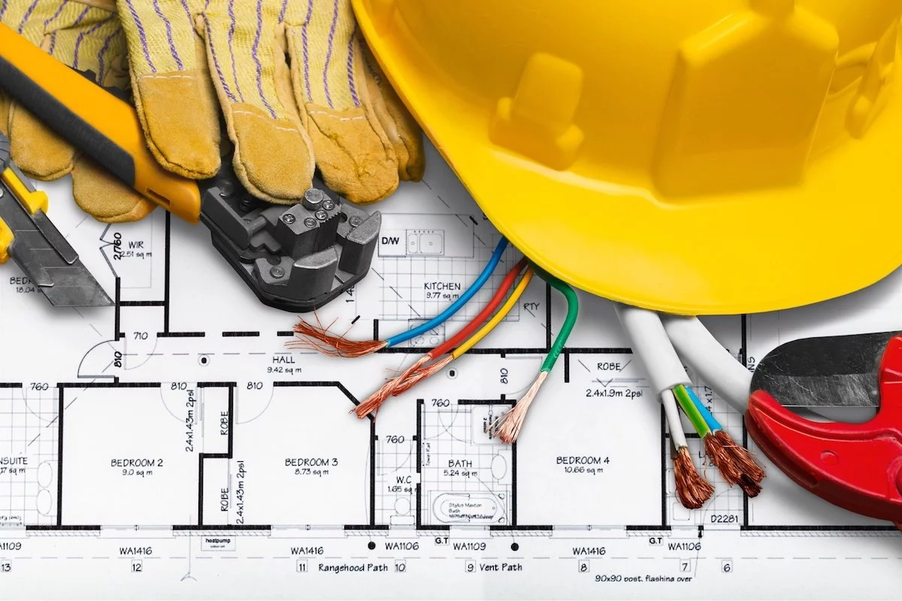

Nous intervenons rapidement à Sainte-Luce-sur-Loire pour tout type de panne électrique : coupures de courant, courts-circuits, dysfonctionnements de réseau. Nos techniciens qualifiés effectuent un diagnostic précis et remplacent les éléments défectueux (fusibles, disjoncteurs, interrupteurs...) pour une réparation durable et sécurisée.
LES SERVICES
Installation et mise en conformité à Sainte-Luce-sur-Loire
Installation complète de systèmes électriques à Sainte-Luce-sur-Loire, avec mise aux normes, pose de tableaux électriques modernes et distribution sécurisée du courant.
Dépannage et réparation à Sainte-Luce-sur-Loire

Intervention rapide à Sainte-Luce-sur-Loire pour tous types de pannes électriques, remplacement de composants défectueux et diagnostic complet pour une réparation durable.
Rénovation électrique à Sainte-Luce-sur-Loire

Travaux de rénovation électrique partielle ou complète à Sainte-Luce-sur-Loire, avec modernisation des installations et mise aux normes de sécurité.
Éclairage et chauffage à Sainte-Luce-sur-Loire

Installation et entretien de systèmes d’éclairage et de chauffage électrique à Sainte-Luce-sur-Loire, incluant chauffages au sol et chauffe-eaux économiques.
Entretien préventif à Sainte-Luce-sur-Loire

Maintenance régulière à Sainte-Luce-sur-Loire pour assurer la fiabilité de vos installations électriques et prévenir les pannes futures.
À Sainte-Luce-sur-Loire, nous assurons l’installation complète de systèmes électriques : câblage, prises, dispositifs de protection et tableaux électriques. Chaque installation est réalisée dans le respect des normes de sécurité en vigueur afin de garantir un réseau fiable, durable et sécurisé. Nous proposons également un service de diagnostic et de vérification complet pour s’assurer que vos équipements répondent aux exigences de performance et de conformité.
Nos services à Sainte-Luce-sur-Loire incluent l’installation et la maintenance de systèmes d’éclairage intérieur et extérieur, adaptés aux logements et locaux professionnels. Nous privilégions des solutions LED économiques et performantes. En parallèle, nous assurons la pose et l’entretien de chauffage électrique, y compris le chauffage au sol et les chauffe-eaux, pour un confort optimal tout en respectant les normes de sécurité et d’efficacité énergétique.
À Sainte-Luce-sur-Loire, nous proposons une maintenance électrique proactive et régulière pour garantir la fiabilité et la longévité de vos installations. Nos contrôles approfondis permettent d’identifier les signes d’usure ou de défaillance avant qu’ils ne provoquent une panne, assurant ainsi la continuité et la sécurité de votre réseau électrique.
Pour vos projets de rénovation électrique à Sainte-Luce-sur-Loire, nous intervenons sur les installations existantes, qu’il s’agisse de logements anciens ou de locaux professionnels. Nos prestations comprennent le remplacement de tableaux électriques, la réfection du câblage, l’ajout de prises et luminaires, ainsi que la mise aux normes NF C 15-100. Notre priorité : vous offrir une installation fiable, performante et parfaitement sécurisée.
NOTRE SAVOIR-FAIRE À SAINTE-LUCE-SUR-LOIRE
Chez Lassistance Electricien Sainte-Luce-sur-Loire, notre équipe d’électriciens qualifiés met son expertise au service de vos projets. Nous intervenons pour sécuriser et moderniser vos installations électriques avec des solutions durables, conformes aux normes, et adaptées à tous les types de bâtiments. Grâce à un matériel de pointe et à un savoir-faire rigoureux, nous vous garantissons des travaux soignés, efficaces et parfaitement sécurisés. Faites confiance à notre expérience pour vos besoins en installation, mise aux normes ou maintenance à Sainte-Luce-sur-Loire.
TARIFS ÉLECTRICIEN À SAINTE-LUCE-SUR-LOIRE
TRANSPARENTS ET COMPÉTITIFS
Chez Lassistance Electricien Sainte-Luce-sur-Loire, nous vous offrons des prestations de haute qualité à des tarifs compétitifs. Nos interventions sont pensées pour allier performance, sécurité et respect de votre budget. Que ce soit pour une installation neuve ou un entretien régulier, nous vous proposons des devis gratuits et sans engagement.
DEVIS GRATUITPOURQUOI CHOISIR LASSISTANCE ELECTRICIEN À SAINTE-LUCE-SUR-LOIRE ?
Choisir Lassistance Electricien Sainte-Luce-sur-Loire, c’est faire confiance à un acteur local reconnu pour son sérieux et la qualité de ses prestations. Nous comprenons les besoins spécifiques de la commune et proposons des solutions adaptées aux habitations comme aux locaux professionnels. Notre équipe expérimentée travaille avec du matériel haut de gamme pour garantir des résultats durables, que ce soit pour des mises en conformité, des systèmes de chauffage électrique ou des installations domotiques.
SERVICES ÉLECTRIQUES À SAINTE-LUCE-SUR-LOIRE
Interventions sur mesure :
Nous adaptons chaque prestation à vos besoins spécifiques à Sainte-Luce-sur-Loire, que ce soit pour des installations neuves, des rénovations ou des maintenances.
Matériaux de qualité :
Nous utilisons uniquement des équipements de marques reconnues pour garantir la sécurité et la longévité de vos installations.
Efficacité énergétique :
Nos solutions intègrent des technologies modernes pour améliorer vos performances énergétiques tout en réduisant votre consommation.
VOTRE ÉLECTRICIEN DE CONFIANCE À SAINTE-LUCE-SUR-LOIRE
Avec Lassistance Electricien Sainte-Luce-sur-Loire, vous bénéficiez d’un service complet et sans stress. Nous prenons en charge toutes les étapes : étude de vos besoins, installation, mise en conformité et maintenance. Vous pouvez ainsi vous concentrer sur l’essentiel, en toute confiance. Nos interventions transforment vos installations électriques en véritables atouts pour votre confort et votre sécurité au quotidien.